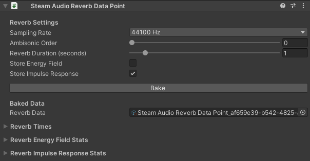

Steam Audio Reverb Data Point
A single point in space for which reverb can be baked and stored.
This component is designed to be used for baking and storing reverb data only. Unlike the Steam Audio Probe Batch component, it is not designed to be used for run-time rendering of reverb together with Steam Audio Source.
Can be attached to any GameObject. Typically, this is attached to an empty GameObject created just for this purpose.
Each of the settings below can be adjusted independently for every probe. For global options, check Steam Audio Settings, especially the Baked Reflections section.
Note
Every Steam Audio Reverb Data Point automatically bakes both parametric and convolution reverb.
- Sampling Rate
The frequency (Hz) used to generate the impulse response (IR). Match this to the runtime audio engine’s sample rate; otherwise the IR must be resampled.
- Ambisonic Order
The Ambisonic order of the IRs generated when baking reverb. Increasing this value results in more accurate directional variation of reflected sound, at the cost of increased disk space usage.
- Reverb Duration
The duration (in seconds) of the IRs generated when baking reverb. Increasing this value results in longer, more accurate reverb tails, at the cost of increased disk space usage.
- Store Energy Field
Saves Steam Audio’s intermediate multi-band Energy Field data.
- Store Impulse Response
Stores the full multi-channel, time-domain IR at the chosen sampling rate.
- Bake / Bake Selected
Bake reverb for the selected probe(s).
- Reverb Data
Reference to the generated Steam Audio Reverb Data asset containing this probe’s baked reverb. These assets are automatically placed in the
Assets/Resources/ReverbDatafolder.